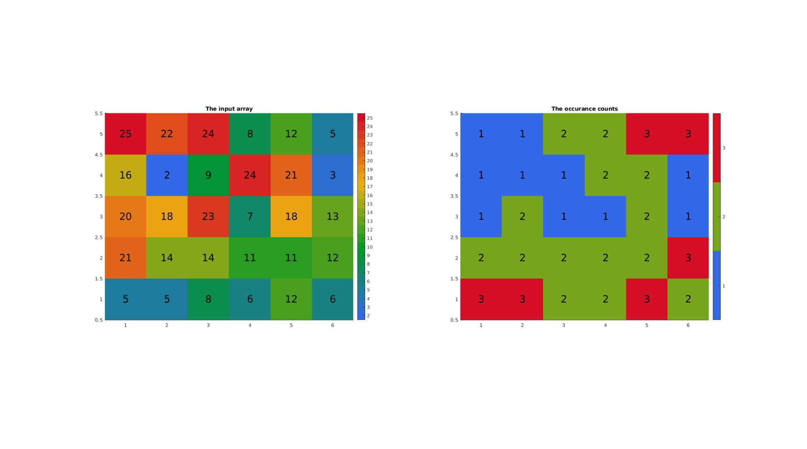

cunique
Below is a demonstration of the features of the cunique function
Contents
clear; close all; clc;
Syntax
[A_uni,ind1,ind2,Ac]=cunique(A);
Description
The imx function provides a figure window based GUI for 3D image segmentation
Examples
Plot settings
fontSize=20;
Example 1: Getting unique entries and occurance counts for 1xN arrays
n=15; A=round(25*rand(1,n)); %Rounded random set in range 0-25 A(1)=A(end); %Force at least one double occurance for this example A %Get unique set and counts [A_uni,ind1,ind2,Ac]=cunique(A)
A =
Columns 1 through 13
9 10 15 5 22 25 24 0 22 20 19 14 13
Columns 14 through 15
9 9
A_uni =
0 5 9 10 13 14 15 19 20 22 24 25
ind1 =
8 4 1 2 13 12 3 11 10 5 7 6
ind2 =
Columns 1 through 13
3 4 7 2 10 12 11 1 10 9 8 6 5
Columns 14 through 15
3 3
Ac =
Columns 1 through 13
3 1 1 1 2 1 1 1 2 1 1 1 1
Columns 14 through 15
3 3
Example 2: Getting unique entries and occurance counts for NxM arrays
n=5; m=6; A=round(25*rand(n,m)); %Rounded random set in range 0-25 A(1)=A(end); %Force at least one double occurance for this example A %Get unique set and counts [A_uni,ind1,ind2,Ac]=cunique(A)
A =
5 5 8 6 12 6
21 14 14 11 11 12
20 18 23 7 18 13
16 2 9 24 21 3
25 22 24 8 12 5
A_uni =
2
3
5
6
7
8
9
11
12
13
14
16
18
20
21
22
23
24
25
ind1 =
9
29
1
16
18
11
14
17
21
28
7
4
8
3
2
10
13
15
5
ind2 =
3 3 6 4 9 4
15 11 11 8 8 9
14 13 17 5 13 10
12 1 7 18 15 2
19 16 18 6 9 3
Ac =
3 3 2 2 3 2
2 2 2 2 2 3
1 2 1 1 2 1
1 1 1 2 2 1
1 1 2 2 3 3
Visualizing input array and occurange counts
cFigure; subplot(1,2,1); title('The input array') hold on; imagesc(A); image_numeric(A,[],0,fontSize); axis tight; axis equal; colormap(gca,gjet(max(A(:)))); icolorbar; subplot(1,2,2); title('The occurance counts') hold on; imagesc(Ac); image_numeric(Ac,[],0,fontSize); axis tight; axis equal; colormap(gca,gjet(max(Ac(:)))); icolorbar; drawnow;
Example 3: Getting unique entries and occurance counts for NxMx... arrays
n=3; m=4; l=2; A=round(25*rand(n,m,l)); %Rounded random set in range 0-25 A(1)=A(end); %Force at least one double occurance for this example A %Get unique set and counts [A_uni,ind1,ind2,Ac]=cunique(A)
A(:,:,1) =
8 12 12 6
22 19 18 22
2 11 17 21
A(:,:,2) =
24 14 16 15
4 11 18 18
2 2 15 8
A_uni =
2
4
6
8
11
12
14
15
16
17
18
19
21
22
24
ind1 =
3
14
10
1
6
4
16
21
19
9
8
5
12
2
13
ind2(:,:,1) =
4 6 6 3
14 12 11 14
1 5 10 13
ind2(:,:,2) =
15 7 9 8
2 5 11 11
1 1 8 4
Ac(:,:,1) =
2 2 2 1
2 1 3 2
3 2 1 1
Ac(:,:,2) =
1 1 1 2
1 2 3 3
3 3 2 2
Example 4: Using 'rows' option
n=5; m=3; A=round(25*rand(n,m)); %Rounded random set in range 0-25 A(1,:)=A(end,:); %Force at least one double row for this example A %Get unique set and counts [A_uni,ind1,ind2,Ac]=cunique(A,'rows')
A =
12 15 19
6 18 4
23 21 17
21 25 21
12 15 19
A_uni =
6 18 4
12 15 19
21 25 21
23 21 17
ind1 =
2
1
4
3
ind2 =
2
1
4
3
2
Ac =
2
1
1
1
2

GIBBON www.gibboncode.org
Kevin Mattheus Moerman, gibbon.toolbox@gmail.com
GIBBON footer text
License: https://github.com/gibbonCode/GIBBON/blob/master/LICENSE
GIBBON: The Geometry and Image-based Bioengineering add-On. A toolbox for image segmentation, image-based modeling, meshing, and finite element analysis.
Copyright (C) 2006-2022 Kevin Mattheus Moerman and the GIBBON contributors
This program is free software: you can redistribute it and/or modify it under the terms of the GNU General Public License as published by the Free Software Foundation, either version 3 of the License, or (at your option) any later version.
This program is distributed in the hope that it will be useful, but WITHOUT ANY WARRANTY; without even the implied warranty of MERCHANTABILITY or FITNESS FOR A PARTICULAR PURPOSE. See the GNU General Public License for more details.
You should have received a copy of the GNU General Public License along with this program. If not, see http://www.gnu.org/licenses/.